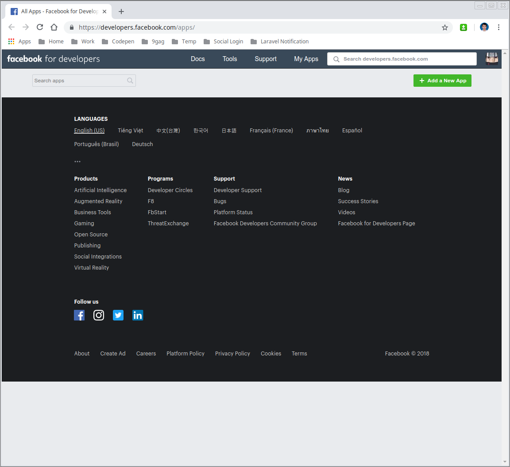
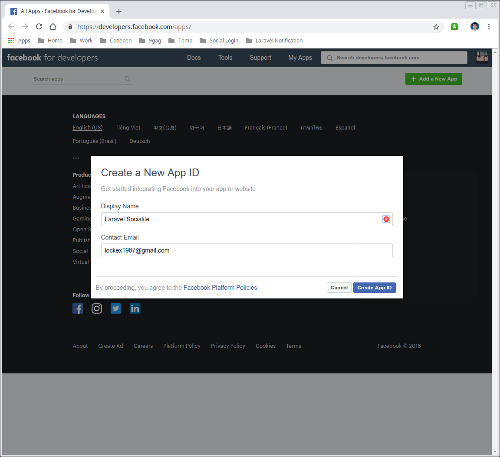
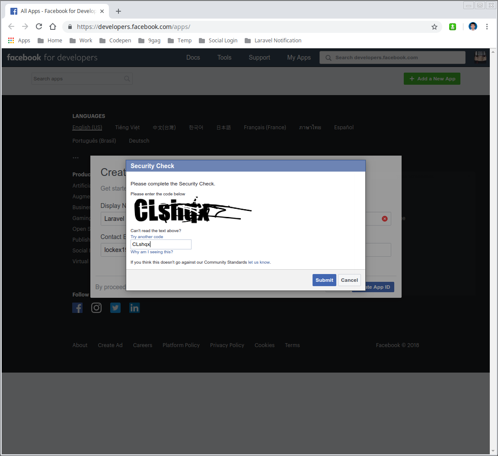
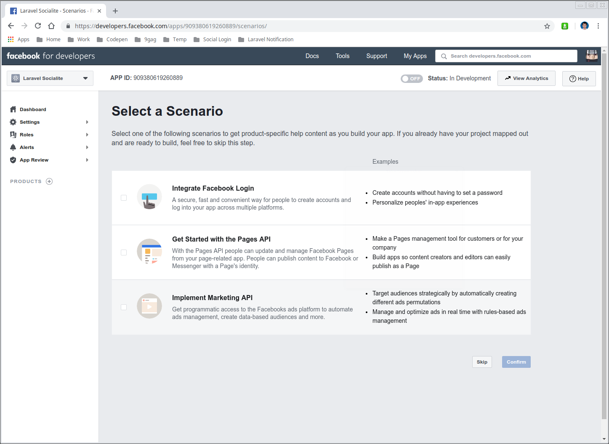
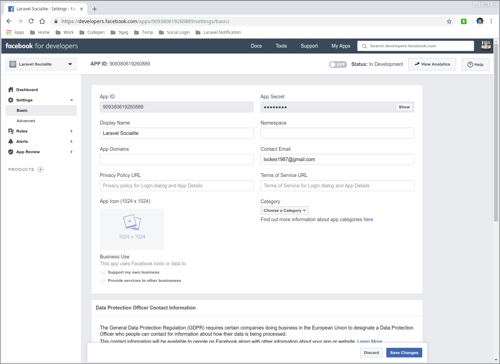

Tạo Facebook app
Bạn truy cập vào link sau:
https://developers.facebook.com/apps/
Chọn Add a new app.

Nhập tên của app.

Xác nhận Captcha.

Vậy là chúng ta đã tạo xong app.

Vào vùng Settings / Basic để lấy thông tin App ID và App Secret.

Xong.
Sau sự cố bảo mật thông tin, FB đã thắc chặt chính sách hơn. Toàn bộ callback URL yêu cầu phải là https hết.
Nếu bạn làm localhost, cứ khai báo https://localhost/auth/facebook/callback.
Sau đó truy cập https://localhost và làm theo hình sau: